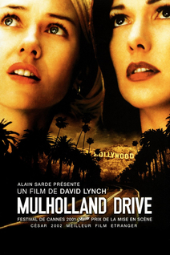

Nuit du sommeil
Mulholland Drive
A Hollywood, durant la nuit, Rita, une jeune femme, devient amnésique suite à un accident de voiture sur la route de Mulholland Drive. Elle fait la rencontre de Betty Elms, une actrice en devenir qui vient juste de débarquer à Los Angeles. Aidée par celle-ci, Rita tente de retrouver la mémoire ainsi que son identité.
durée: 146 min

RRR